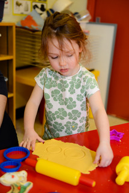
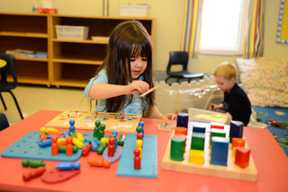
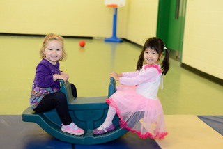

wvcp.registrar@gmail.com
470 roosevelt avenue
ottawa, on K2A 1Z6
613.728.9473

WVCP mission and philosophy
The Westboro Village Co-operative Preschool was founded, more than 30 years ago, on the dual principal that children learn through play and that parental involvement is key to any child’s educational success.
Our program provides social, musical, physical, & linguistic play experience for each child’s individual developmental needs.
WVCP is all about learning through play! Our co-operative environment encourages children, parents and teachers to share ideas, socialize, make connections, and build community.
We employ professional teachers with ECE qualifications, but, at the Westboro Village Co-operative Preschool, parents are an integral part of daily education, as well as the annual renewal of programs and facilities.
The Westboro Village Co-operative Preschool is a licensed non-profit for children 2-4 years old. It operates on a non-profit basis and is administered by its parent members in a co-operative format.
Learning through play...
... in our two spacious and well-equipped creativity rooms and our thoroughly resourced gymnasium, featuring a constantly renewed collection of supplies and learning tools, child-sized washroom facilities, as well as:
...music
Instruments, rhythm, dance and song, circle-time and finger-plays
Weekly theme is connected in the songs and stories of circle-time.
…arts & crafts
 Daily projects designed around freeing imaginations, exercising choice, understanding space and material, judging size, position and balance, texture and depth, increasing manual dexterity confidence in shaping the world.
Daily projects designed around freeing imaginations, exercising choice, understanding space and material, judging size, position and balance, texture and depth, increasing manual dexterity confidence in shaping the world.
…science

Sand and water play-stations, as well as a diversity of other supplies and activities aimed at observing cause and effect, elementary reactions, and natural forces at work.
…puzzles, games
Introducing the joys of appropriate social interaction, co-operation, problem-solving, patience and focusing to achieve positive results.
…reading, writing & arithmetic

A wide range of books, as well as letter and/or number-oriented games and toys aimed at introducing these three crucial “Rs” of education.
…physical play

Sport and dynamic exertion, social and physical activity - it all takes place daily - in our gymnasium with our balls, tents, tunnels, slides, push-cars, trikes & more.